Le HUD façon jeu vidéo
En haut de l’écran, en permanence : pix actifs, tokens consommés, coût total et temps de travail cumulé. Tu sais où tu en es sans rien ouvrir.
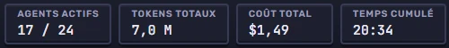
Compatible avec Claude Code · Windows 10/11
Avec PixelQG, chaque agent IA de Claude Code devient un pix : un petit personnage qui vit dans un QG en pixel art. Ton pix lit à la bibliothèque, lance ses commandes en salle serveurs, délègue en salle de réunion… et toi, tu vois tout en direct : qui fait quoi, depuis combien de temps, et combien ça coûte.
Dans un terminal, un agent IA, c’est un mur de texte qui défile. Avec cinq agents en parallèle, c’est cinq murs… et aucune idée de qui bloque ni de ce que ça coûte.
Quatre gestes, et ton équipe de pix prend vie.
Écris la mission, donne un nom et une couleur à ton nouveau pix, choisis le modèle, l’effort et les permissions (le mode Prudent, en lecture seule, est proposé par défaut). Un clic pour le lancer — ou Ctrl + Entrée — et il arrive au bureau.
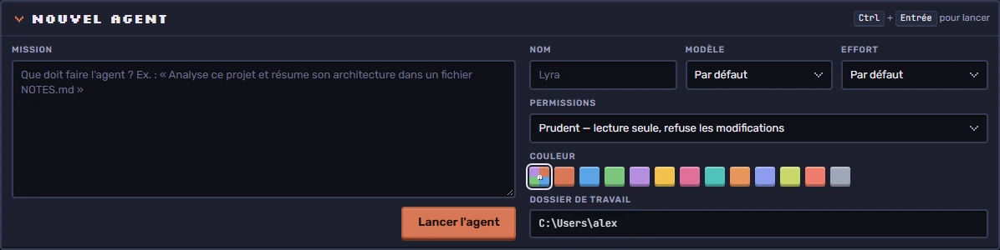
Ton pix entre par l’accueil et file dans la salle qui correspond à ce qu’il fait. Une bulle affiche son action en cours (« Lit server.js », « Exécute npm test »…). Molette pour zoomer, glisser pour te déplacer, double-clic pour recentrer.
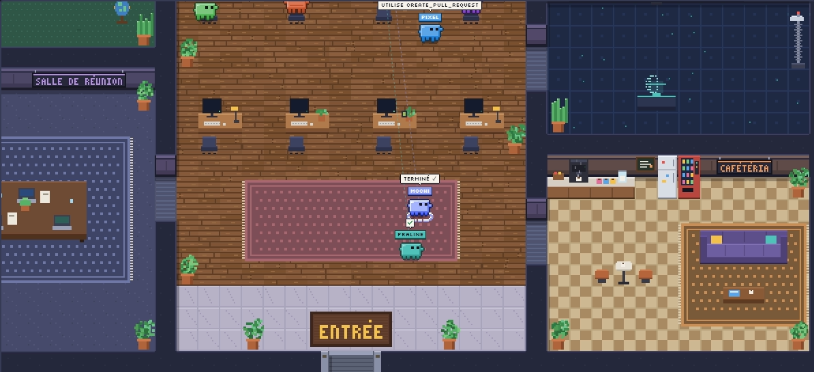
Ouvre un onglet terminal directement dans l’app et tape claude : la session est détectée et rejoint le bureau sous la forme d’un nouveau pix. Tu gardes tes habitudes de ligne de commande, en gagnant la vue d’ensemble.
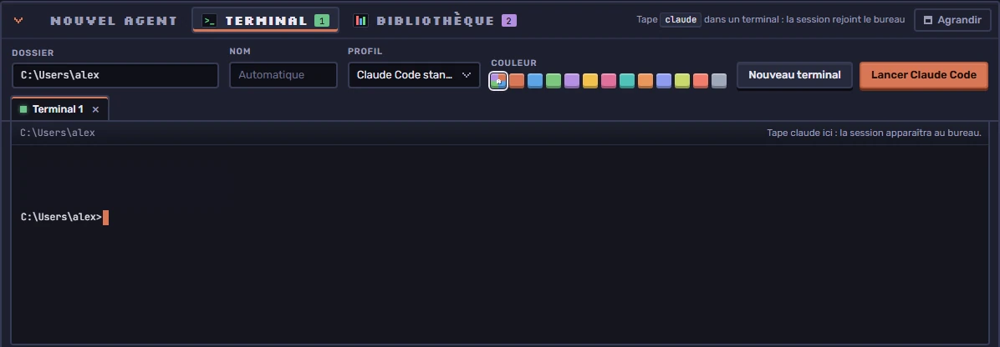
Colle le lien d’un dépôt GitHub public de skills ou d’agents : PixelQG le clone et ses skills servent à tous tes pix. Tu actives ou désactives chaque dépôt d’un clic. Par sécurité, seuls les skills et agents sont chargés : jamais de hooks ni de serveurs MCP.
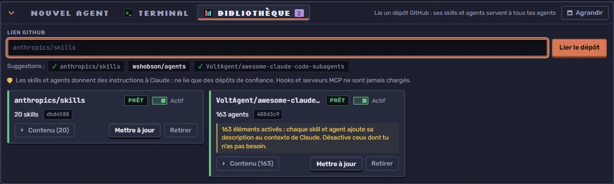
Le problème, le lancement d’un pix, la visite des salles, le HUD, le terminal et la bibliothèque. Une petite musique 8-bit l’accompagne : active le son si tu veux.
Des captures du logiciel en fonctionnement (avec une vingtaine de pix au travail).
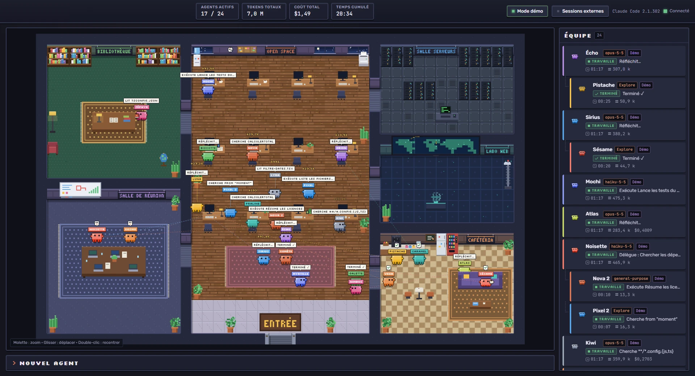
En haut de l’écran, en permanence : pix actifs, tokens consommés, coût total et temps de travail cumulé. Tu sais où tu en es sans rien ouvrir.

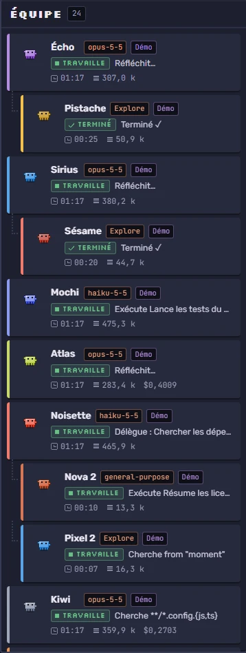
Chaque pix avec son modèle, son statut, sa tâche du moment, son temps et ses tokens. Les sous-pix sont rangés sous leur parent.
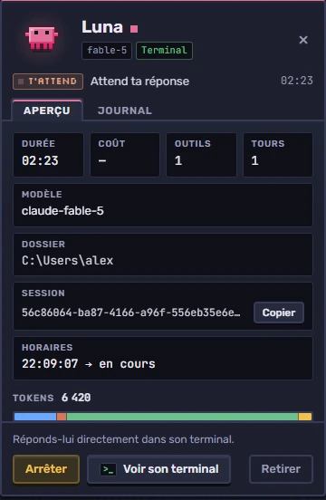
Durée, coût, outils, tours, dossier, session, journal… Un pix t’attend ? Ouvre son terminal ou envoie-lui une nouvelle consigne.
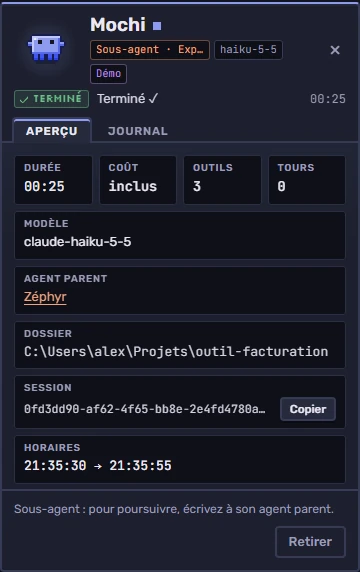
Quand un pix délègue, le sous-pix apparaît avec un lien vers son parent. Tu sais qui a lancé qui, et quand.
Trouve et partage des skills GitHub avec les autres membres PixelQG.
Prudent (lecture seule) ou plus d’autonomie, choisi pix par pix.
Réponds à un pix qui t’attend ou relance-le avec une nouvelle instruction.
L’onglet Journal garde la trace de chaque action du pix.
Règle le modèle et le niveau d’effort de chaque pix au lancement.
Zoome sur une salle, déplace-toi dans le bureau, sélectionne un pix pour ouvrir sa fiche.
Pas besoin de lire les logs : l’endroit où se trouve ton pix te dit ce qu’il fait.
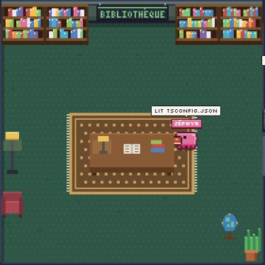
= lecture
Ton pix lit et fouille tes fichiers : lecture, recherche dans le code, liste des fichiers.
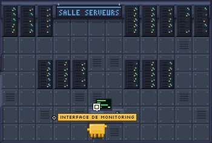
= commandes
Il exécute des commandes : build, tests, scripts, git…
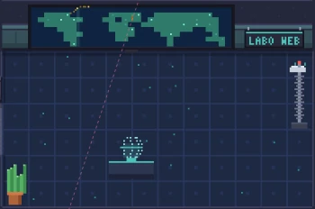
= web
Il fait une recherche sur le web ou lit une page en ligne.
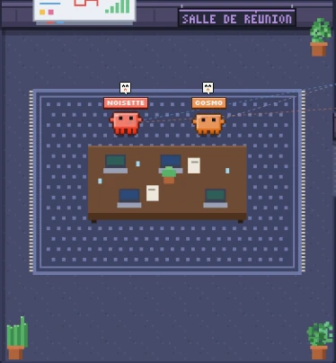
= délégation
Il confie une tâche à un sous-pix, qui apparaît puis part travailler de son côté.
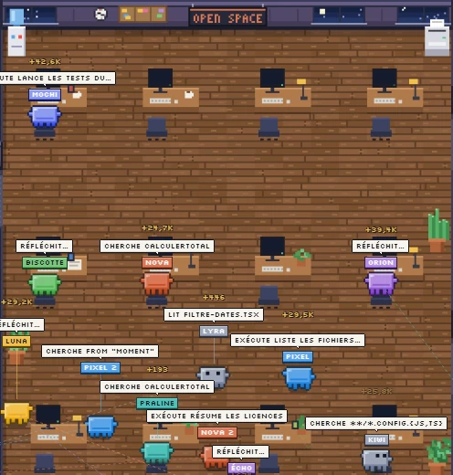
= réflexion
Il réfléchit et rédige à son bureau entre deux actions.
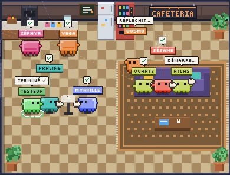
= terminé
Mission accomplie : il prend sa pause café. Tu vois tout de suite qui a fini.
Essai gratuit de 7 jours, sans carte bancaire
10 €paiement unique
Non inclus : l’abonnement ou les crédits Anthropic nécessaires à Claude Code, facturés séparément par Anthropic.
Acheter maintenant — 10 € Commencer l’essai gratuitLe paiement en ligne ouvre bientôt.
Essai gratuit de 7 jours, sans carte bancaire : crée ton compte, télécharge PixelQG, et l’essai démarre à ta première connexion dans l’appli (un essai par PC). Ensuite, l’achat se fait depuis ton compte et le paiement chez notre prestataire de paiement : aucune donnée bancaire ne transite par ce site. Voir les conditions générales de vente.
PixelQG pilote et affiche Claude Code : il ne le remplace pas. Avant d’acheter, vérifie que tu as bien :
PixelQG est une application Windows. Pas de version Mac ni Linux pour l’instant.
Gratuit, à installer depuis le site officiel de Node.js si tu ne l’as pas déjà.
L’outil en ligne de commande d’Anthropic, déjà connecté à ton compte. Si claude marche dans ton terminal, c’est bon.
Abonnement ou crédits Anthropic, séparés et non inclus : ce sont eux qui paient le travail de tes pix.
Une application Windows qui lance de vrais agents Claude Code et montre chacun d’eux comme un pix, un petit personnage qui bosse dans un bureau en pixel art, avec ses statistiques en direct. Le travail est fait par Claude Code ; PixelQG le rend visible et plus simple à piloter.
C’est le nom des personnages de PixelQG : chaque agent IA de Claude Code devient un pix, un petit robot en pixel art avec son nom et sa couleur, qui se déplace dans le QG selon ce qu’il fait. Un pix, des pix ; et quand un pix délègue, il fait apparaître un sous-pix.
Non. PixelQG est un outil indépendant, compatible avec Claude Code. Il n’est ni affilié à Anthropic, ni approuvé par Anthropic.
Pour faire travailler de vrais agents, il te faut Claude Code installé et connecté.
Oui : essai gratuit de 7 jours, sans carte bancaire. Crée ton compte, télécharge PixelQG et connecte-toi dans l’appli : l’essai démarre tout seul (un essai par PC). Le Workshop, lui, est réservé aux licences payées.
Après l’essai gratuit de 7 jours, PixelQG coûte 10 €, une seule fois. Tes pix, eux, consomment ton abonnement ou tes crédits Anthropic, exactement comme quand tu utilises Claude Code dans un terminal. Le HUD t’affiche les tokens et le coût en direct pour que tu gardes la main.
PixelQG tourne en local sur ton PC. Tes agents Claude Code échangent avec Anthropic comme d’habitude, et la bibliothèque télécharge uniquement les dépôts GitHub publics que tu choisis. PixelQG n’envoie pas tes fichiers vers un serveur à lui.
Autant que ta machine et ton forfait Anthropic le permettent. Le bureau reste lisible avec plus d’une vingtaine de pix à l’écran, sous-pix compris.
Pas pour l’instant : PixelQG est livré pour Windows 10 et 11.
Ça peut arriver avec les petits logiciels indépendants : Windows SmartScreen affiche parfois « Windows a protégé votre ordinateur » pour une application qu’il voit rarement. Clique sur « Informations complémentaires » puis « Exécuter quand même ». En cas de doute, écris-nous avant.
Des fichiers d’instructions partagés sur GitHub qui donnent de nouvelles compétences à tes pix. Ne lie que des dépôts de confiance : PixelQG charge uniquement les skills et les agents, jamais les hooks ni les serveurs MCP.
7 jours gratuits pour tester, puis 10 € une fois : tes pix emménagent.